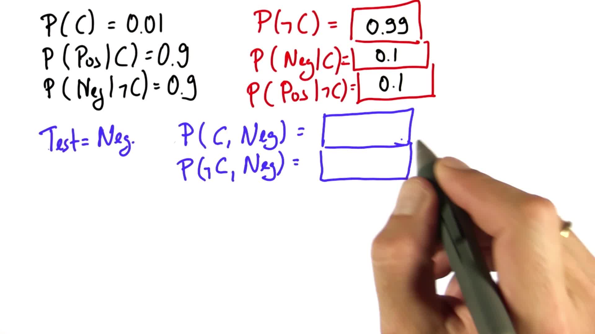

贝叶斯规则
Back to Home
01. 贝叶斯法则
02. 癌症检测
03. 先验与后验
04. 归一化 1
05. 归一化 2
06. 归一化 3
07. 全概率
08. 贝叶斯法则图表
09. 等效线路图
10. 癌症概率
11. 概率给定测试
12. 归一化
13. 归一化概率
14. 疾病检测 1
15. 疾病检测 2
16. 疾病检测 3
17. 疾病检测 4
18. 疾病检测 5
19. 疾病检测 6
20. 贝叶斯法则小结
21. 机器人传感 1
22. 机器人传感 2
23. 机器人传感 3
24. 机器人传感 4
25. 机器人传感 5
26. 机器人传感 6
27. 机器人传感 7
28. 机器人传感 8
29. 归纳总结
30. 练习：Sebastian 在家的概率
31. 学习目标：条件概率
32. 降低不确定性
33. 贝叶斯法则和机器人学
34. 学习传感器数据
35. 使用传感器数据
36. 学习目标 - 贝叶斯法则
37. 贝叶斯规则总结
Back to Home
11. 概率给定测试
概率给定测试
Question:
Start Quiz:

Solution:
Next Concept